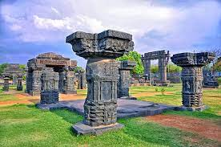

|  |
|---|
Warangal is recognized as one of the best heritage cities of India. It is 145 km away from the state capital Hyderabad. It is also the second largest city in the state of Telangana. The city's name is derived from the Telugu word Orugallu – 'Oru' which means one and the word 'gallu' meaning stone. The city was the capital of the great Kakatiya rulers who reigned between 12th and 14th centuries.
According to the history of Warangal, the Prola Raja of great Kakatiya dynasty built the beautiful city in 12th century. The Kakatiyas, who ruled the place for more than 200 years, have left the succeeding generations, many grand monuments and architectural wonders like the famous Warangal fort, Swayambhu Temple and many other amazing ancient structures. The Warangal Fort, which is the main attraction of the city is spread over a radius of 19 kilometers between Warangal and Hanamkonda. The fort was constructed in the 13th century in the reign of the Kakateya King Ganapati Deva. The Warangal fort is most famous for its graceful and finitely carved arches and pillars. This fort has four large stone gateways.
Warangal fort is located at a distance of 3-4 km from Warangal city, which is well connected by road and rail from Hyderabad, approx.140 km away.
All days of the week : 10:00 am – 7:00 pm